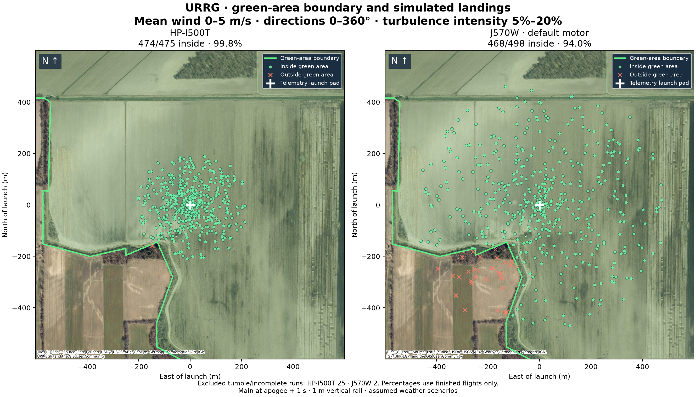
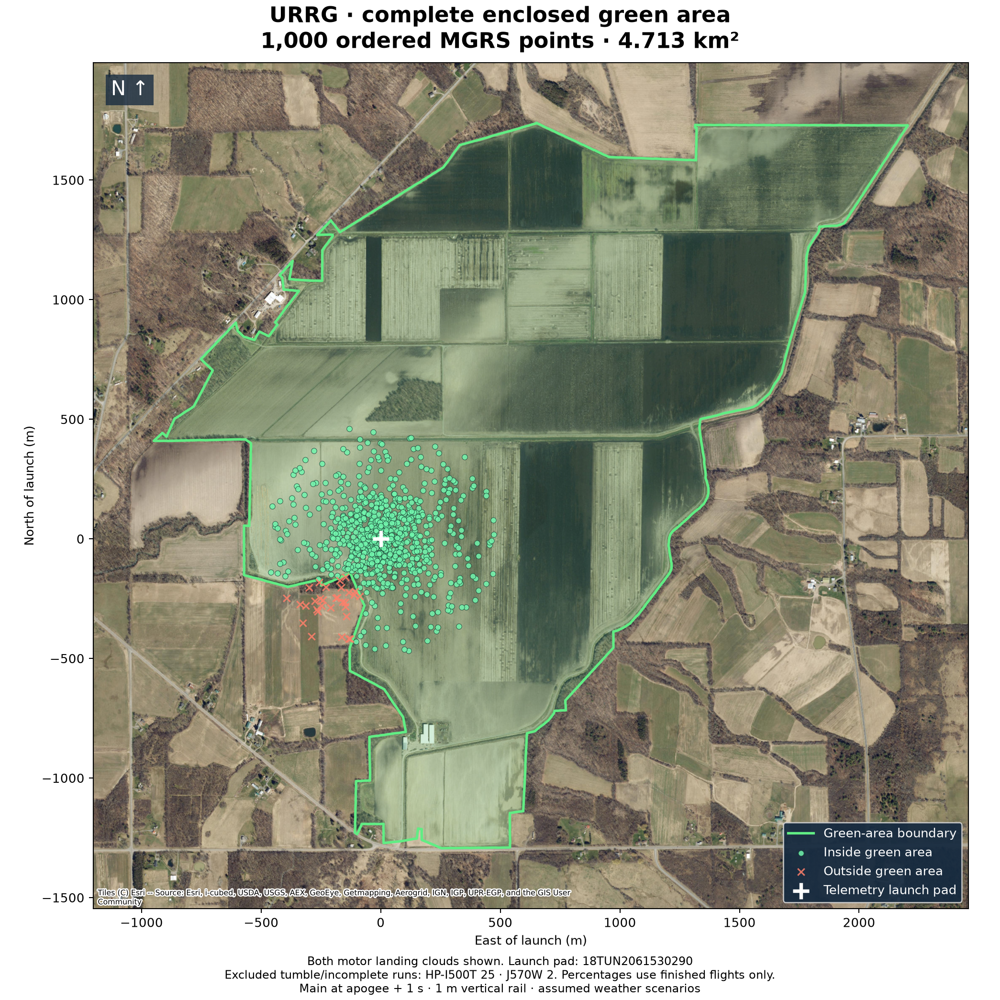
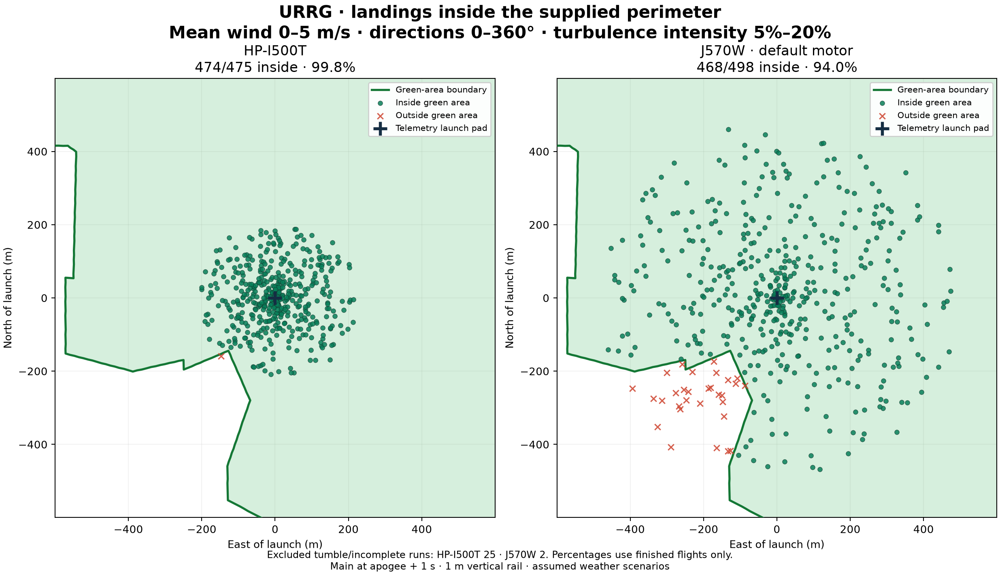
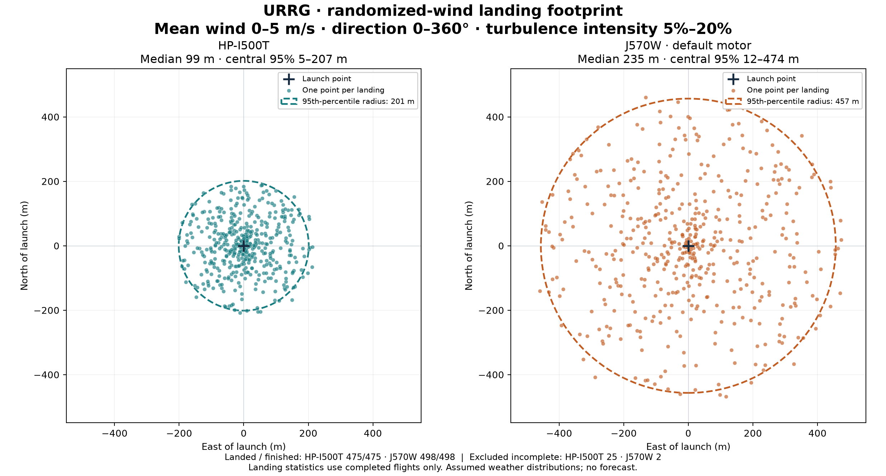
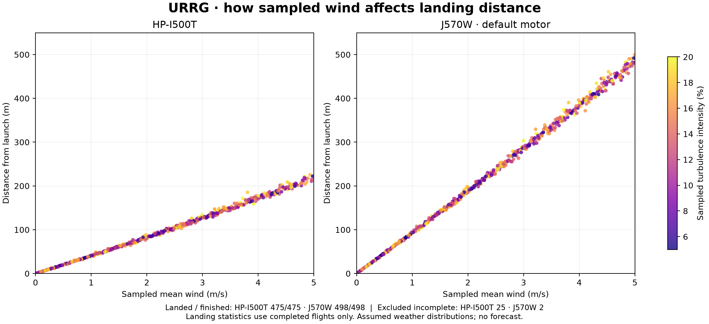
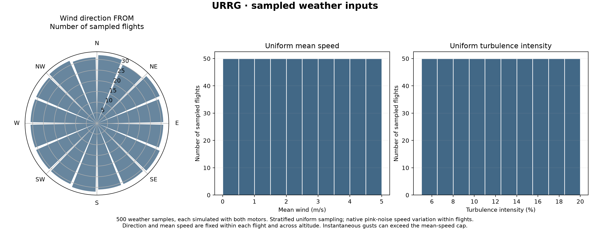
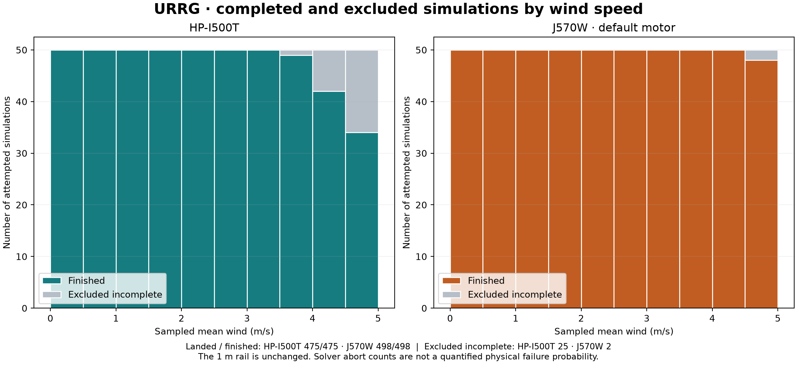
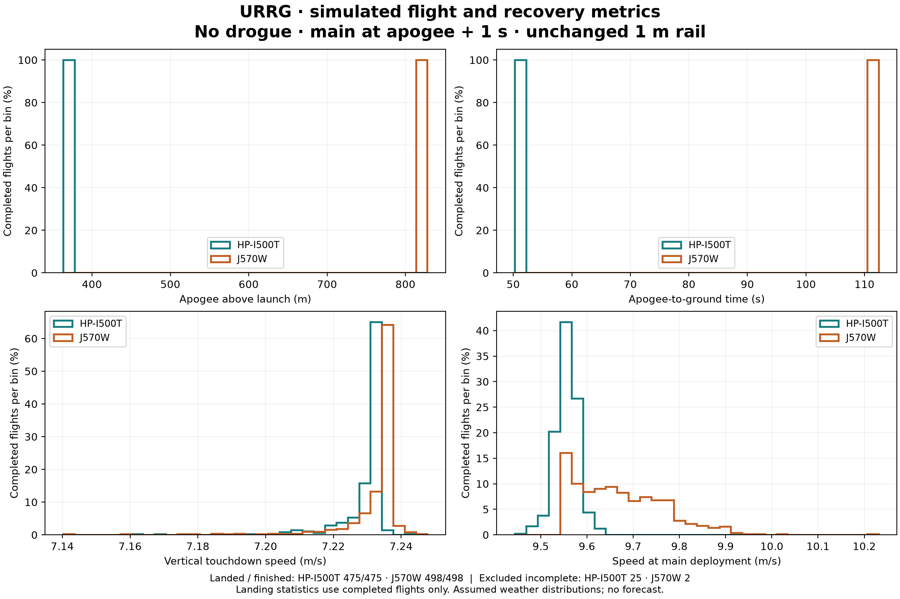

16 October 2026 · 500 flights per motor · 1,000 perimeter points
The Monte Carlo was rerun from the telemetry UI’s URRG launch preset, 18TUN2061530290 (42.70416777°, −77.19029502°). The supplied points are connected in their original order and closed into a polygon, enclosing 4.713 km². The pad is 192.5 m inside the nearest boundary.
Wind direction is uniform over 0–360°, mean wind is uniform from 0–5 m/s, and turbulence intensity is uniform from 5–20%. No drogue; main at apogee + 1 second; 1 m vertical rail. The model and weather cases match the previous study.
Percentages use completed flights only. Tumble aborts and control flights are excluded. Green shading is the entire enclosed polygon; red crosses are simulated landings outside it. Gusts can exceed the 5 m/s mean-speed cap. These percentages describe the assumed weather scenarios, not a measured launch-day probability.
Containment results · Landing coordinates and inside/outside results · Map polygon and landing points · Validation · Reproduction notes







